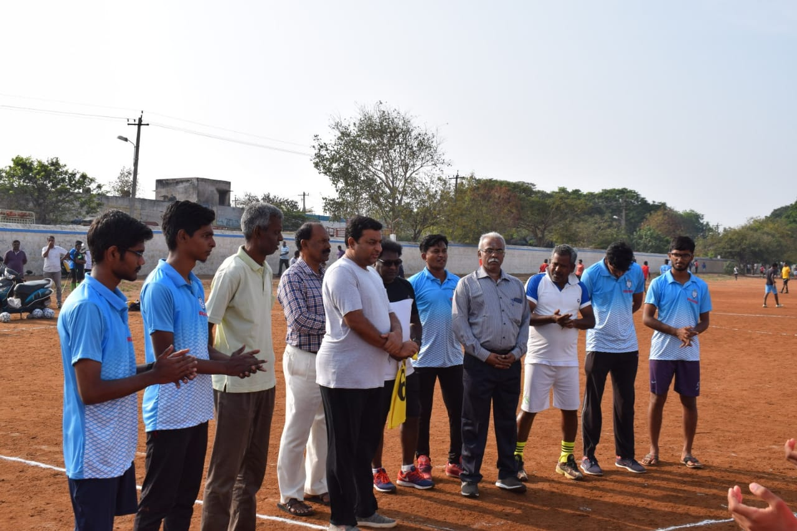

Gallery

Warrior football academy is hosting its 1st edition of golden baby league, an authorized grassroot football event by all India football federation Golden baby league is a long-term player development initiative that aims to grow a new generation players who starts playing football from their young age. The fest mood has already started from 26Feb and continues till 30April. The academy has invited school teams, other club and academy students to participate in the league tournament.
A whooping 250+ kids from various age groups from 5-14 years have started experiencing their football fest in their hometown. The league matches will be conducted on the bases of age categories like under-10, under-12 and under-14. The students will be provided with proper kit so ensure that they are united as a team.
Warrior football academy is planning to conduct summer camps for the students to get the proper instruction and guidance to each student and to become a shining footballer in future.Well trained coaches will be there for training the students and high class coaching will be provided for each students.In this academy, we focus on every Individual with utmost care and try to Enrich their knowledge with every game / training. “When you step in to field, there is none superior than yourself” that has to be the temperament of every player. The Discipline, Dedication and Determination to pursue our dream is going to Decide who we are and what we play. “Football is our Life… and It stops when our blood turns blue…” We wish each and every individual sportstar their Best luck in pursuing their dream and achieving more success in their life.
The dates for summer camp will be announced later.
In this academy, we focus on every Individual with utmost care and try to Enrich their knowledge with every game / training. “When you step in to field, there is none superior than yourself” that has to be the temperament of every player. The Discipline, Dedication and Determination to pursue our dream is going to Decide who we are and what we play. “Football is our Life… and It stops when our blood turns blue…” We wish each and every individual sportstar their Best luck in pursuing their dream and achieving more success in their life.
In this academy, we focus on every Individual with utmost care and try to Enrich their knowledge with every game / training. “When you step in to field, there is none superior than yourself” that has to be the temperament of every player. The Discipline, Dedication and Determination to pursue our dream is going to Decide who we are and what we play. “Football is our Life… and It stops when our blood turns blue…” We wish each and every individual sportstar their Best luck in pursuing their dream and achieving more success in their life.
Katty Bro… aka Karthick is currently working as Administrative Officer (Scale – I) in the premier General Insurance Company of India. A Stellar Service of 15 Long years in Indian Armed Forces (INDIAN NAVY) have made him travel across India, Learn people and attain wider exposure to understand the practical difficulty in them to the core. Football, being his passion, right from his childhood he has garnered many Trophies and medals and has accumulated them under his kitty. He has represented Indian Navy, Western Naval Command and his Fleet teams in various sporting games and events during his stint tenure at Service. He was part of World Military Games held in 2007 @ India.